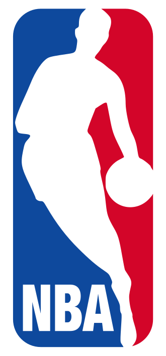

vamos ver e entender quais são os times,sua história e como o campeonato funciona
A National Basketball Association (NBA) é a principal liga de basquete profissional do mundo, fundada em 1946. Composta por 30 franquias dos Estados Unidos e uma do Canadá, a liga reúne os melhores atletas do planeta e movimenta bilhões de dólares anualmente, com fãs em todos os continentes.
A NBA é dividida em duas grandes conferências, cada uma com 15 times. Por sua vez, cada conferência se subdivide em três divisões de 5 equipes, baseadas principalmente na localização geográfica. Essa estrutura é essencial para definir a tabela de jogos e a classificação para os playoffs. Conferência Leste (Eastern Conference) Divisão Atlântico: Boston Celtics, Brooklyn Nets, New York Knicks, Philadelphia 76ers, Toronto Raptors. Divisão Central: Chicago Bulls, Cleveland Cavaliers, Detroit Pistons, Indiana Pacers, Milwaukee Bucks. Divisão Sudeste: Atlanta Hawks, Charlotte Hornets, Miami Heat, Orlando Magic, Washington Wizards. Conferência Leste (Eastern Conference) Divisão Atlântico: Boston Celtics, Brooklyn Nets, New York Knicks, Philadelphia 76ers, Toronto Raptors. Divisão Central: Chicago Bulls, Cleveland Cavaliers, Detroit Pistons, Indiana Pacers, Milwaukee Bucks. Divisão Sudeste: Atlanta Hawks, Charlotte Hornets, Miami Heat, Orlando Magic, Washington Wizards.
A temporada regular da NBA acontece geralmente entre outubro e abril. Cada uma das 30 equipes disputa 82 jogos no total, equilibrados da seguinte forma: 4 jogos contra cada adversário da mesma divisão (16 jogos). 4 jogos contra 6 times da mesma conferência, mas de divisões diferentes (24 jogos). 3 jogos contra os outros 4 times restantes da mesma conferência (12 jogos). 2 jogos contra cada time da conferência oposta (30 jogos). Ao fim desses 82 jogos, as equipes são ranqueadas em suas conferências. Os critérios de desempate levam em conta confronto direto, desempenho dentro da conferência, entre outros. Premiações importantes da temporada regular: O time com a melhor campanha geral leva vantagem de mando de quadra em todas as séries de playoffs. O troféu MVP (Most Valuable Player) é dado ao melhor jogador da temporada, além de prêmios como Defensor do Ano, Novato do Ano e Sexto Homem do Ano.
Antes dos playoffs tradicionais, a NBA introduziu o Play-In Tournament. Ele envolve as equipes que terminam a temporada regular entre a 7ª e a 10ª colocação de cada conferência. Funciona assim: Jogo 1: 7º colocado vs. 8º colocado. O vencedor garante a 7ª vaga nos playoffs. Jogo 2: 9º colocado vs. 10º colocado. O perdedor é eliminado; o vencedor avança. Jogo 3: Perdedor do Jogo 1 vs. Vencedor do Jogo 2. Quem vencer fica com a 8ª e última vaga nos playoffs. Assim, as posições 7 e 8 são definidas nesse mini torneio de vida ou morte, que acontece logo após o fim da temporada regular.
Os playoffs da NBA seguem o formato de eliminação direta, com 16 times (8 de cada conferência). Todas as séries são disputadas em melhor de 7 jogos (quem vencer 4 partidas primeiro avança). A ordem dos jogos em cada série é 2-2-1-1-1, ou seja, o time de melhor campanha joga em casa os jogos 1, 2, 5 e 7. Fases dos Playoffs dentro de cada conferência: Primeira Rodada (First Round): 1º vs. 8º, 2º vs. 7º, 3º vs. 6º, 4º vs. 5º. Semifinais de Conferência Finais de Conferência: o vencedor se torna o Campeão da Conferência (Leste ou Oeste) e avança para a grande final.
Os campeões do Leste e do Oeste se enfrentam nas NBA Finals, também em uma série melhor de 7 jogos. O time com a melhor campanha da temporada regular entre os dois finalistas tem o mando de quadra. O vencedor das Finais recebe o Troféu Larry O’Brien e o título de campeão da NBA. O melhor jogador da série fatura o prêmio Bill Russell de MVP das Finais
Duração: 4 quartos de 12 minutos cada (48 minutos totais). Em caso de empate, prorrogações de 5 minutos até haver um vencedor. Relógio de arremesso (Shot Clock): 24 segundos para a equipe atacante tentar um arremesso ao aro. Tempo para cruzar a quadra: 8 segundos para levar a bola do campo de defesa ao ataque. Regra dos 3 segundos: Um jogador de ataque não pode permanecer dentro da área restritiva do garrafão por mais de 3 segundos consecutivos. Faltas pessoais: Um jogador é excluído da partida ao cometer 6 faltas. Faltas coletivas (bônus): A partir da 5ª falta coletiva de uma equipe no quarto, o adversário cobra 2 lances livres a cada falta.
O equilíbrio competitivo é um dos pilares da NBA. Para isso, existem dois mecanismos centrais: Draft da NBA Realizado anualmente em junho, permite que as equipes selecionem novos jogadores vindos das universidades ou do cenário internacional. A ordem de escolha é definida por uma loteria entre os 14 times que não foram aos playoffs, dando aos piores colocados maiores chances de conseguir a primeira escolha. Isso ajuda a fortalecer as franquias mais fracas. Salary Cap (Teto Salarial) É o limite máximo que cada time pode gastar com os salários de seus jogadores. Existem exceções e o chamado luxury tax (multa para quem ultrapassa certos patamares), o que permite alguma flexibilidade, mas com penalidades financeiras severas para quem gasta muito acima do teto. O objetivo é impedir que as equipes mais ricas acumulem todos os astros.
No meio da temporada, a NBA realiza uma pausa para o All-Star Weekend, um grande festival do basquete que inclui: Jogo das Celebridades e Rising Stars Challenge (jogadores novatos e segundanistas). Skills Challenge, Torneio de 3 Pontos e Concurso de Enterradas no sábado. Jogo das Estrelas (All-Star Game): no domingo, reúne os 24 melhores jogadores da temporada, escolhidos por voto popular, jogadores e imprensa. Antigamente era Leste vs. Oeste; atualmente, dois capitães escolhem seus times independentemente da conferência, em um formato mais dinâmico.
A NBA é marcada por dinastias e rivalidades históricas. As franquias mais vitoriosas são: Boston Celtics e Los Angeles Lakers: 17 títulos cada (recorde compartilhado). Golden State Warriors: 7 títulos. Chicago Bulls: 6 títulos (todos na década de 1990 liderados por Michael Jordan). Rivalidades clássicas como Celtics vs. Lakers, Bulls vs. Pistons nos anos 90, ou Cavaliers vs. Warriors nos anos 2010, ajudam a escrever a história da liga e a paixão dos torcedores.
é um time...